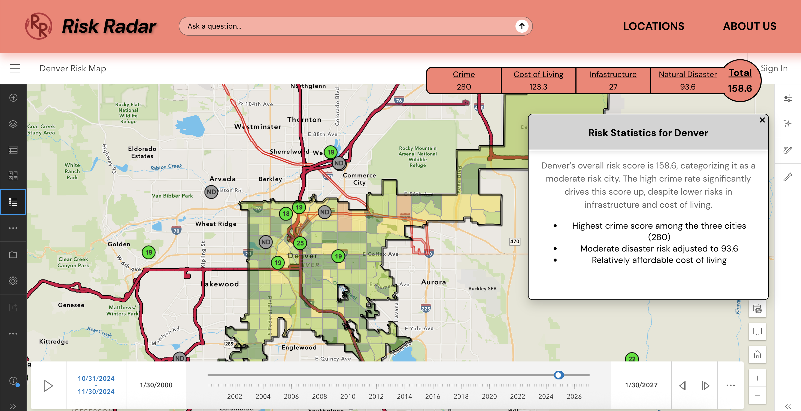
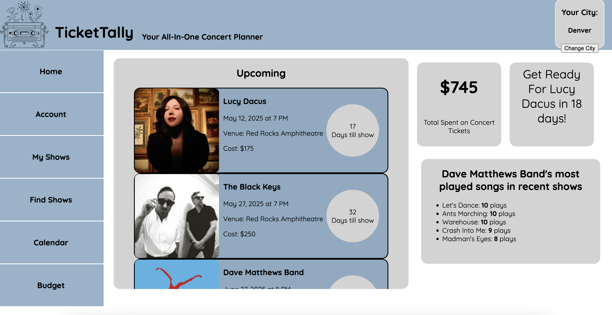

Featured Projects
A look into some of my recent work
Ocean Acoustics Data Puller Script

Check out the Github Repo here!
This project involved the independent development of Python scripts to programatically extract, decompress, and validate data packages pulled from our stakeholder's servers, replacing a slow, manual process. This automation led to a significant boost in operational efficiency, enhanced data accessibility and reliability, and reduced operational overhead, ultimately improving workflow consistency.
Irish Secondary School Analysis

Check out the Tableau Dashboard here!
This interactive dashboard visualizes the impact of the Trinity Access Programme (TAP) initiatives across ~50 secondary schools. By integrating in-house data with national sources, the dashboard allowed for a comprehensive comparison of student continuation rates into higher education. This project's insights enabled TAP to tailor resources, assess program effectiveness, and adjust strategies aimed at improving university attendance among low socioeconomic students.
Risk Radar

Check out the Github Repo here!
Risk Radar is an interactive web application that evaluates and compares the livability risk across three major U.S. cities: Denver, Los Angeles, and Tampa. This project integrates geographic information systems (ArcGIS), full-stack web development (React and Node.js), user-centered UX/UI design, and advanced AI tools (ChatGPT API) to create a dynamic and informative experience.
At its core, Risk Radar introduces a customized scoring model that notes diverse factors—such as natural disaster vulnerability, local infrastructure, crime, and cost of living - to generate an overall risk profile for each city.
Ticket-Tally: An All-In-One Concert Planning App

Check out the Github Repo here!
TicketTally simplifies concert planning by combining show discovery, budgeting, and event management in one place. Built with React, Node.js, FastAPI, and SQLAlchemy, the app connects to Ticketmaster, Spotify, and Setlist.fm APIs to let users search for concerts, preview setlists, and track upcoming shows.
With built-in budgeting tools, TicketTally helps users manage costs and prioritize experiences, delivering a fast, intuitive platform built for music fans.
Beats and Bytes: Decoding the Data Behind Song Popularity

Check out the Story Map here! | Check out the Medium Page here!
Beats and Bytes was the third project completed in my Altair-based Information Visualization class. My group explored the numbers behind song popularity, looking at genres, locations, and audio features with an iterative design process.
As the project manager, I coordinated tasks, provided input, and ultimately created the final ArcGIS story map along with several visualizations.
Our analysis uncovered some interesting insights:
- What defines the "pop" genre and why it lives up to its name
- The global influence of Western music
- How "energy" stands out as the key audio feature in popular songs
Chicago's Education: A Final Redesign

Check out the Altair Dashboard here!
The final project in Information Visualization was an individual iteration of a previous group project. I chose to redesign a static dashboard that analyzed geospatial education data in Chicago. In the original project, I served as project manager while also contributing significantly to the code and written report. The redesign aimed to improve the dashboard based on feedback from the instructor and peers. Built with the Python library Altair, the dashboard highlighted the impact of low-income areas on graduation rates in the city. My focus was on enhancing the design using solid visualization principles, such as effective color schemes, spatial awareness, and guiding viewers' first impressions. The final product emphasized the critical role of government funding in public education across major cities.